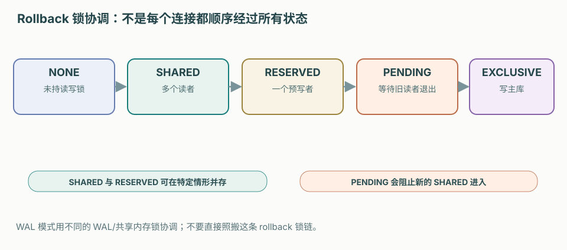
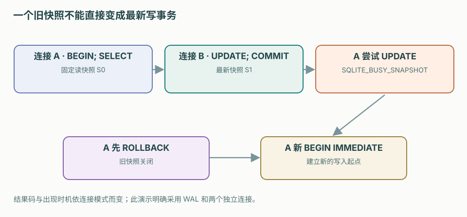
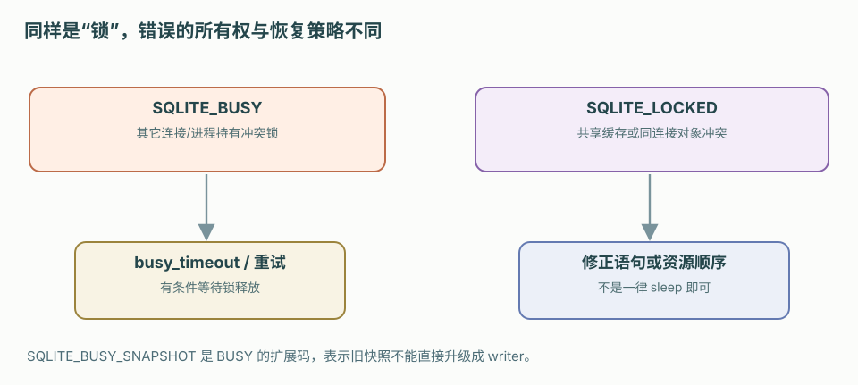

锁与并发：Busy、Locked 和旧快照升级失败
文件锁不是一条放之四海皆准的升级链。先区分 rollback 五级锁、WAL 快照、共享缓存表锁与 busy handler，再用两连接实验检查可观察的冲突。
1. 两个写者为什么仍会冲突？
SQLite 是嵌入式数据库，不依赖集中式服务器协调事务；它通过 SQLite 层、VFS 文件锁和 WAL 相关协议保证多个连接的行为。无论是 rollback 还是 WAL，同一数据库在同一时间只有一个 writer。WAL 让写者通常能与读者并行，但并没有变成多写者并行更新同一文件。
假设连接 A 执行 BEGIN IMMEDIATE，随后连接 B 也想执行 BEGIN IMMEDIATE，B 可能拿不到 writer 资源，得到 SQLITE_BUSY。这不是“SQLite 缺少事务功能”，而是正常并发协议要求的互斥。在 Python 的 sqlite3 中可能表现为 sqlite3.OperationalError: database is locked；错误文本未必提供足够区分，需要结合扩展码和事务时序。
2. Rollback 模式的 NONE/SHARED/RESERVED/PENDING/EXCLUSIVE
传统 rollback journal 的文件锁说明中，SHARED 允许多个读者同时访问；RESERVED 可让一个连接预留写入权限且仍允许现有读者；PENDING 表示正在等待旧读者离开并阻止新读者进入；EXCLUSIVE 需要排除其它文件访问。NONE 则是未持锁状态。

官方 lockingv3提醒：Pager 主要跟踪的锁状态不完全等价于操作系统文件锁的每个临时状态，PENDING 可能由 OS 层处理。不同 OS 的底层 API 也不同，不要在 Windows 上照抄 Unix 的 fcntl 调试说明。
3. WAL 快照下的 SQLITE_BUSY_SNAPSHOT
最值得单独推演的情况是：A 开启读事务，先读到旧快照；B 在 A 的读事务期间提交更新；A 随后想把旧读事务升级为写事务。这样做会试图在旧快照上继续写，而数据库已被另一连接改变，SQLite 为避免把历史分支覆盖到当前主干，会拒绝升级并返回扩展结果码 SQLITE_BUSY_SNAPSHOT。

错误的基础类型仍是 SQLITE_BUSY，扩展码说明具体情形。SQLite Isolation 文档和 Result Codes都强调该场景。实际代码应检查 sqlite3_extended_errcode() 或 Python 新版本的异常 sqlite_errorcode，不能只靠文本“database is locked”判断。
4. SQLITE_BUSY 与 SQLITE_LOCKED 不宜混用
两者都可能被用户笼统称作“锁错误”，但通常涉及不同资源竞争范围：SQLITE_BUSY 常由不同数据库连接争夺同一文件/事务资源触发；SQLITE_LOCKED 也可能出现在同一连接的语句生命周期冲突，或共享缓存表级锁冲突。它们的恢复策略不应一概设计为等待几毫秒后重试。

sqlite3_busy_timeout() 为 busy 情形配置等待策略；并不会修复逻辑上的过期快照，也不能自动保证对 LOCKED 有用。共享缓存模式是 SQLite 官方明确不推荐新应用使用的历史特性，Shared Cache 文档建议优先用 WAL 解决普通读写并发诉求。
| 失败类型 | 典型原因 | 首先确认 |
|---|---|---|
SQLITE_BUSY | 另一连接持有写入资源 | 锁持有者 / busy_timeout |
SQLITE_BUSY_SNAPSHOT | WAL 旧快照尝试升级写事务 | 是否先 ROLLBACK 并重开 |
SQLITE_LOCKED | 同连接或 shared-cache 锁冲突 | 未完成的 stmt / cache 模式 |
5. 一套 C/Python 实验如何避免“共享连接”误判
仓库新增 examples/17_lock_matrix.py。测试首先用两个独立连接创建 rollback 数据库，验证第二个 writer 不能与第一个 IMMEDIATE writer 同时执行；再用 WAL 文件验证读快照升级为写返回 BUSY 类错误并在可用 Python/SQLite 组合下识别 BUSY_SNAPSHOT。
python3 examples/17_lock_matrix.py
# PASS: rollback second writer blocked
# PASS: WAL stale read snapshot cannot be upgraded
# PASS: rollback + fresh transaction permits write测试使用文件型数据库而不是 :memory:，因为分别打开的 :memory: 连接默认是不同数据库，不能代表同一文件的锁竞争。也不在同一个连接上用不同游标模拟“两个进程”，否则容易产生错误的并发解释。
6. 为什么“重试直到成功”不能取代事务设计
高并发应用应尽量缩短事务持锁时间，避免在写事务里做网络请求或长时间交互；在确定适合重试的情形使用有限次数的退避并在必要时重新开始整个事务。如果一个事务已看到旧快照，则对其自身继续重试 SQL 并不保证获得新的读取视图。对于读多写少的 workload，WAL 通常有优势，但必须评估 long reader 对 checkpoint 的影响。
问题驱动审查
- 记录两条连接的
journal_mode、起始事务类型与时间线； - 判断错误属于 BUSY、LOCKED 还是 BUSY_SNAPSHOT；
- 指出应该等待同一个事务、关闭旧快照，还是释放未完成语句；
- 解释为什么 rollback 五级锁图不能直接替代 WAL reader 的 snapshot 解释。
自测：WAL 中有一个读事务，是否说明另一个连接完全不能写？
不说明。WAL 的核心优点是大多数情形下允许 reader 与 writer 并行；但同一时间仍只有一个 writer，旧快照尝试升级写事务也可能失败。
下一章转向优化器：在同样的数据和并发条件下，SQLite 怎么选择合适的访问路径。
原始资料与版本边界
本章绘制的序列与数据样本用于解释因果，不是逐条源码 trace。特别是 WAL 文件生命周期、snapshot、journal mode 与事务执行时机都与 SQLite 版本和具体工作负载相关。
- File Locking And Concurrency · SQLite 官方
- Isolation In SQLite · SQLite 官方
- Result and Error Codes · SQLite 官方
- Shared-Cache Mode · SQLite 官方
- Busy Timeout · SQLite 官方